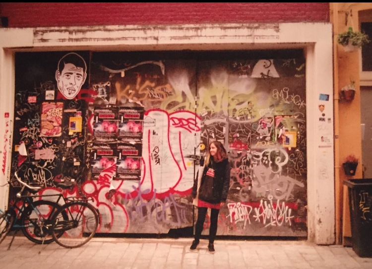

Elle is currently a BA Fine Art student studying at Leeds Beckett University in the UK.

Elle takes a multidisciplinary approach to her work spanning across painting, collage, illustration, sound and film. Her work responds to her life whilst documenting and exploring her human experience reflecting thoughts, questions and ideologies relevant to her. The human condition and psyche is continuously investigated throughout her work and is reflected in imagery influenced by surrealism, language and other forms of visual and auditory communication.
@Instagram